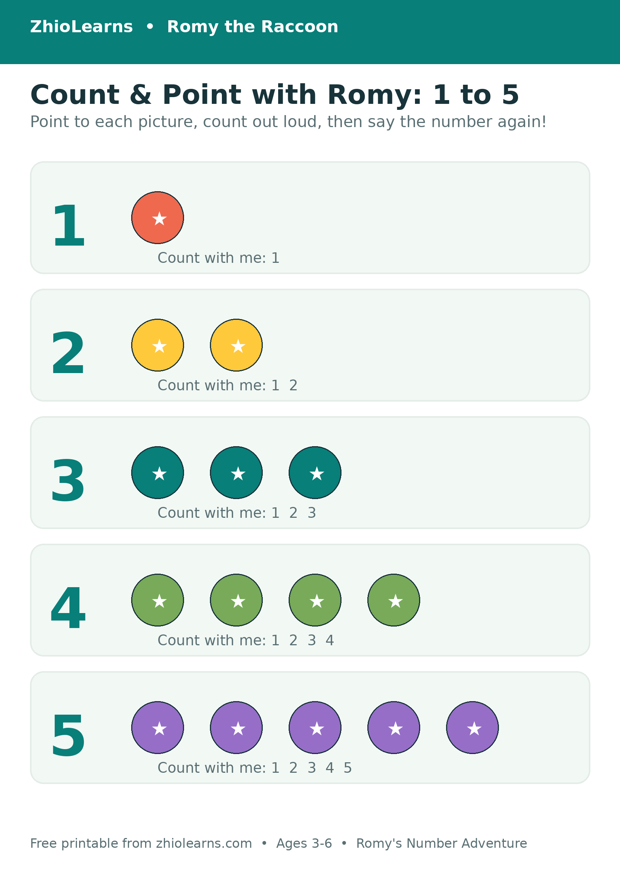

Count With Me: Why the Best First Maths Happens on Your Lap
There is a moment, somewhere around age three, when a child discovers that counting is something you can ask for. Not a lesson. Not homework. A page, a snack, a staircase — “Count it again!” And so you count it again, a little slower, with a small finger landing on each picture as you go: one… two… three.
That small, ordinary moment is doing more than it looks like. It is where first maths actually lives — not in a test your child passes alone, but in counting said out loud, together, about things a child can point to.
Counting is a conversation before it is a skill
Adults tend to hear counting as a performance: can they get to ten without a mistake? A young child hears it differently. For them, counting at first is a shared rhythm — your voice, their voice, a finger moving from thing to thing. They may join in for only one number, usually the last one, said very loudly and with great pride. That is not falling short. That is the learning, arriving in the order a small brain can use it: the sound of the numbers, the pointing, and only later the tidy sequence.
This is why lap time works so well for first numbers. Your child is close, the pace is yours to slow down, and nothing about it feels like being checked. A counting book read this way is not really being “read” at all — it is being played, together, page by page.
Three small things that make it stick
- Point slowly, and let their finger lead. Numbers stick to things a child touches. Move at pointing speed, not talking speed, and let your child do the pointing whenever they want to — even when it slows the page down. Especially then.
- Say it together, not at them. Count in chorus where you can. A child who whispers “two” half a second behind you is practising exactly as hard as the one who shouts it first.
- Welcome the “again!” When the order comes out wobbly — one, two, five! — the kindest and most effective reply is simply to count it once more, the same friendly way. Repetition is not a sign it failed. For a three- to five-year-old, repetition is the method.
And one thing to quietly skip: the quiz at the end. “So how many were there?” turns a warm game into an exam in a single sentence. If your child volunteers the answer, celebrate it. If they just want the page again, give them the page again. The understanding arrives on its own schedule, usually while you are counting something completely unrelated, like spoons.
When the counting escapes the book
It will. A child who has been counting pictures on your lap starts counting stairs, berries, buttons and red cars, unprompted, at full volume, in public. Let it run. Every set of stairs counted together is the book working exactly as intended — the numbers have left the page and moved into real life, which is where they were always supposed to end up. Count along, keep it light, and do not worry about the day they skip a stair. Stairs, unlike tests, can always be counted again on the way back down.
A first counting book built for your lap
Romy’s Number Adventure was made for precisely this kind of reading. Every page is an invitation — count with Romy, point at the pictures, say the numbers out loud together — in a gentle, story-shaped adventure for ages 3–5. There is no pressure and there are no tests, just warm repetition and a raccoon who is always ready to count it one more time. It pairs naturally with Romy’s Big Number Adventure for families who want to keep going.
Read a few pages together tonight, and then try the free printable below at the kitchen table tomorrow: point, count out loud, and circle the number — the same game, now with a pencil.
🖨️ Free printable: Romy’s Count & Point 1–5

Point to each picture, count out loud together, then count and circle the right number. Two pages, ages 3–6, free, no sign-up needed to print it.
Download the free printable (PDF)📚 Today’s book
Find Romy’s Number Adventure and Romy’s other books in our little shop — and read Romy’s Alphabet Picnic free in the Storytime section.
See Romy’s books →🌿 More from the Parent Corner
Why do letters stick best when they belong to words your child already says? Our previous article starts at the breakfast table.
A Is for the Apple on Your Table →